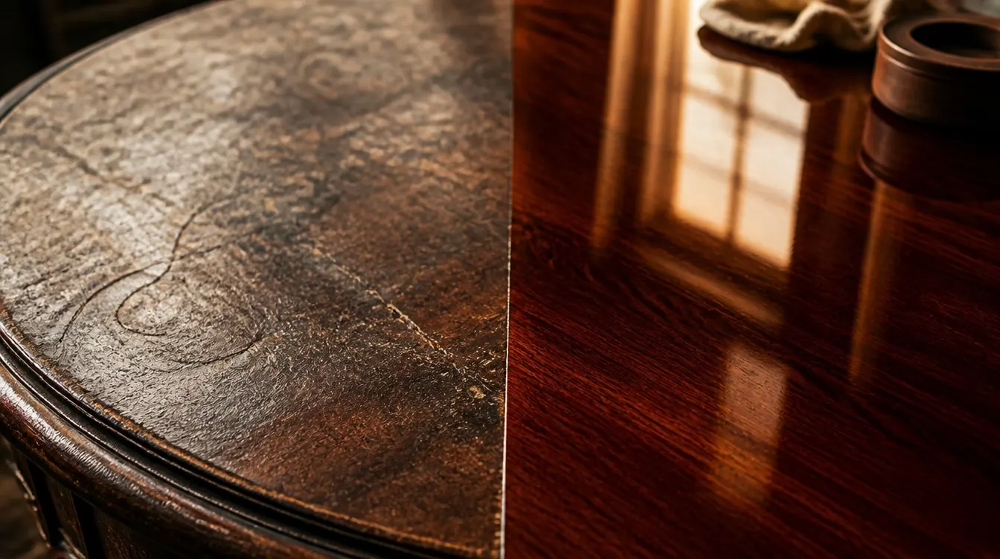
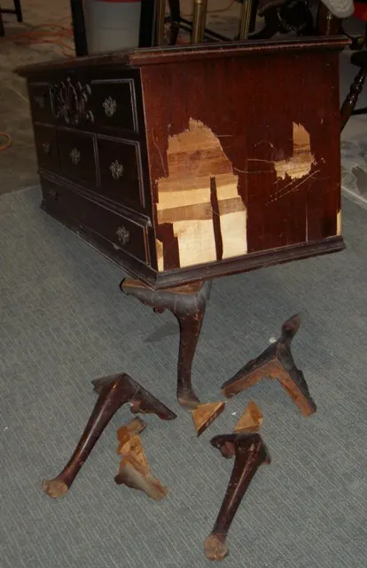
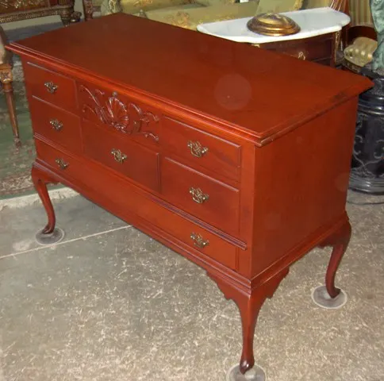
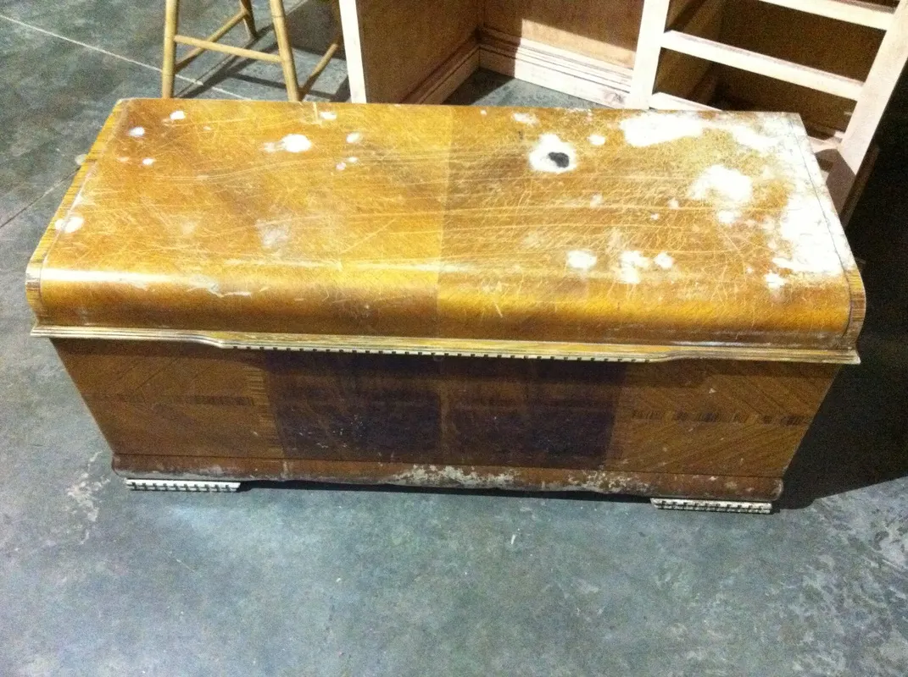
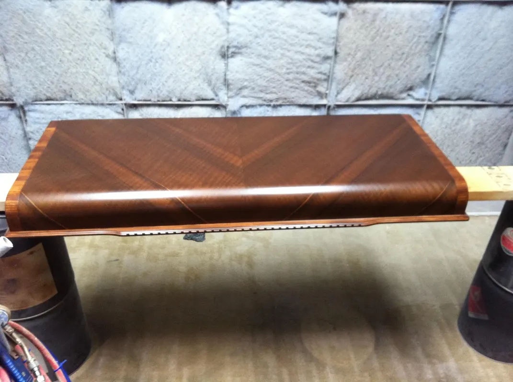

Damage restoration · Water · Fire · Transit · Claims
When something happens to something loved.
A burst pipe, a house fire, a move that ended badly. The pieces that arrive here after a disaster are rarely beyond help — and when an insurance claim is involved, we have been the quiet third party at the table since the 1990s: photographs, documentation, and a quote an adjuster can trust.
Reading the damage
What water and smoke actually do.
The first thing to know is where the damage lives. Much of what looks catastrophic sits in the finish — a film thinner than a business card — and not in the wood beneath it.
Water. A white ring or a cloudy blush usually means moisture trapped in the finish itself, not the wood — which is why so many of them can be reversed without a full refinish. We cover this in our furniture care guide. Standing water is a different matter: given time it works beneath the finish and leaves the mildew staining you can see on the cedar chest in the plates below.
Heat and fire. Finishes are the most vulnerable part of a piece, and heat finds them first — clouding, blistering and scorching the surface while the wood underneath often survives.
Smoke. Smoke settles on every surface it reaches. We have handled fire and smoke damage as part of insurance claims for decades, and the honest answer is always the same: let us look before anyone writes the piece off.


When the truck arrives with bad news
Broken in transit, rebuilt at the bench.
Moving damage is its own species: not a slow stain but a sudden break. Snapped legs, smashed cases, joinery sheared apart by a drop or a shifting load.
The mahogany lowboy in the plates below arrived exactly that way — one side smashed in, all four legs snapped off. It left the shop structurally rebuilt, standing square, its carved shell drawer intact. That is the order of operations for every transit case: the piece is made sound first, and only then does the finish work begin.
Delivery, moving and re-location companies are among the commercial clients we serve — alongside hotels, hospitals, offices and banks — because when a customer’s heirloom comes off the truck broken, they need it made right, not merely paid off.
How a claim works with us
Claims, documented honestly.
We have worked with insurance claims for fire, smoke and water damage since the 1990s. The process is deliberately simple.
-
Photographs
Send us photos of the damaged piece — or let us see it in person. Free pick-up and delivery across DC, Maryland and Virginia means a damaged piece never has to travel twice.
-
Documentation
We document the damage we find, so that everyone at the table — you, your insurer, your adjuster — is looking at the same facts.
-
An honest quote
We quote what the restoration actually requires: no more, no less. Adjusters can work with a number they trust, and so can you.
* Not sure whether a mark needs a claim at all? White rings often live in the finish, not the wood — see the furniture care guide.
Two cases from the bench
The record, in plates.
{kind=link}

{kind=link}

{kind=link}

{kind=link}

† More of the record lives in the gallery and the project studies.
Start with a few photographs.
Before a damaged piece becomes a line item on a claim, let us tell you what it would take to bring it back. Send photos — we’ll answer honestly, whether the news is good or not.